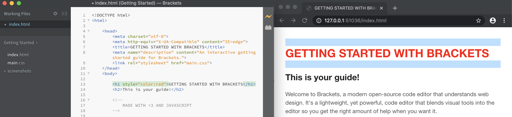
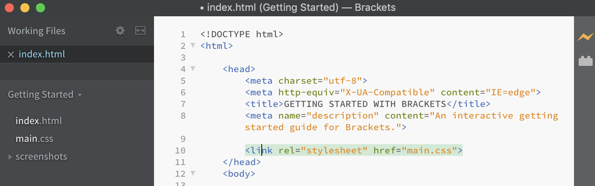

CSS ist eine Stylesprache. Sie enthält genau so wie HTML auch keine Logik sondern verleiht HTML Elementen ihr Aussehen und definiert ihre Position. Um wieder bei dem Beispiel mit dem Haus zu bleiben erledigt CSS die Arbeit des Malers und Inneneinrichters. CSS Dateien haben die Endung .css
Es gibt drei Arten, wie man CSS Anweisungen schreiben kann
Inline bedeutet, dass das CSS in der selben "Linie" wie das HTML geschrieben wird. Im Start-Tag eines HTML Elements fügt man mit style CSS Anweisungen direkt hinzu. Zum Beispiel so:
< h1 style="color: red"> Blume < /h1>
Ein Anwendungsfall dafür wäre, wenn man etwas nur für dieses eine Element machen möchte. Eigentlich ist das aber nur die faule Variante und macht am Ende des Tages alles nur unübersichtlich.
Die zweite Möglichkeit ist es das CSS im Head zu platzieren. Hierzu fügt man innerhalb des head ein Element hinzu style und schreibt darin die CSS Anweisungen.
Der Nachteil davon ist aber, dass man HTML und CSS getrennt hat. Außerdem wird dann die Seite ewig lange. Und wenn man mehrere HTML Seiten hat dann muss man das CSS immer hin und her kopieren bzw. Änderungen
auf jeder Seite machen und wir sind faule Programmierer und wollen das nicht.
Daher ist die gängigste Variante die, dass man eine eigene CSS Datei anlegt und HTML und CSS miteinander verknüpft. Hierfür fügt man im Head folgende Zeile hinzu:
< link href="styles/style.css" rel="stylesheet" >
href steht für "hyper reference" und gibt den Pfad zur Datei an.rel steht für "relation" und sagt quasi, worum es sich handelt, in diesem Fall um ein Stylesheet.Im Code-Beispiel oben heißt die CSS Datei "style" und liegt von der HTML Datei aus gesehen im Ordner "styles".
Im Fall von dem Screenshot oberhalb liegen CSS und HTML Datei im selben Ordner, daher muss man nur den Dateinamen bei href eingeben.